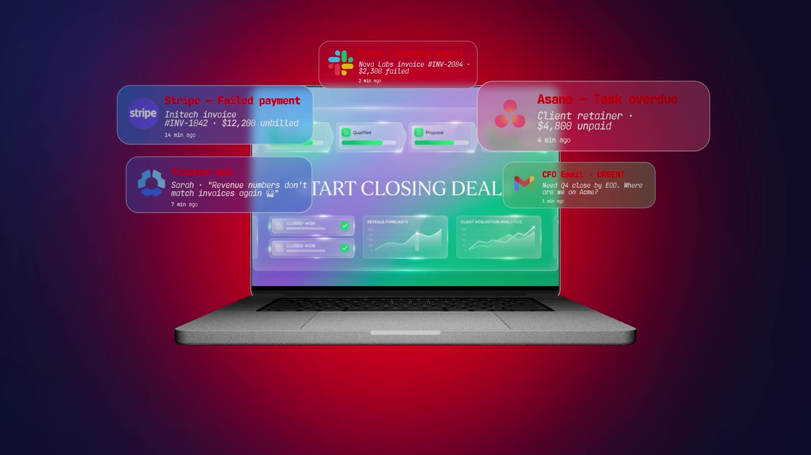

0:04The noise
VO“Every deal triggers a chain of manual work…”
A laptop drowning in failed Stripe payments, Slack pings and “start closing deals” emails.
Why it's thereEvery finance lead has seen this screen at 11pm on day 30. Recognition earns attention faster than any claim.